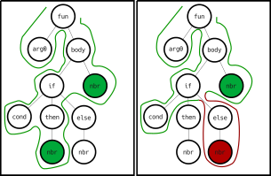

Collektive: Aggregate programming in Kotlin Multiplatform
Danilo Pianini — danilo.pianini@unibo.it
Seminar in “Programmazione di Sistemi Mobile” @ Università di Torino
Introduction
Target systems

- Networked systems
- Heterogeneous devices
- Unreliable communication
- No topology assumptions
- Usually, the worst case is a mesh-like topology with no clear coordinator
- the topology changes dynamically
- Devices are possibly situated
- Possibly multiple network technologies to be used opportunistically
- (e.g., bluetooth, wifi, 5g, etc.)
Self-organising systems
One way to tackle these challenges is through systems that self-organise.
- Self-organisation is a process in which a system spontaneously organizes itself into a structured state without external control.
- It is a bottom-up process, where local interactions between components lead to the emergence of global patterns or structures.
- Self-organisation is often observed in natural systems, such as biological organisms, ecosystems, and social systems.
- It can also be applied to artificial systems, such as robotics, distributed computing, and complex networks.


Engineering self-organisation
- Self-organisation is very hard to engineer
- The system properties are built bottom-up from local interactions
- Even worse, even when a self-org system has been built and verified, it is extremely hard to reuse it in a different context
Where is the engineering?
There are properties that we cannot renounce:
- Top-down design
- Modularity
- Reusability
- Composability
- Scalability
- Maintainability
Aggregate programming, the idea
We have a tool that is natively modular and natively composable:
functional programming languages.
What if we find a set of abstractions compatible with functional programming that allow us to build self-organising systems?
Aggregate programming, originally:
- The computational machine is the entire system
- Data items are a fields
- A map from devices to values
- Basic operations:
- evolution in time:
rep - perception of the surroundings (neighboring field):
nbr - distributed branching (domain segmentation):
if
- evolution in time:
A brief history of aggregate programming languages
MIT Proto, 2006

The precursor of aggregate programming, based on the idea of amorphus computing.
- Originally developed at the MIT by Jonathan Bachrach and Jake Beal
- C++ with built-in OpenGL visualisation
- LISP-like syntax
- Re-implemented in Javascript as WebProto
- Discontinued in 2016 in favour of Protelis
(def gradient (src)
(letfed ((n infinity (mux src 0 (min-hood (+ (nbr n) (nbr-range))))))
n))
Protelis, 2015
The first higher-order aggregate programming language.
def distanceTo(source) {
share (distance <- POSITIVE_INFINITY) {
mux (source) {
0
} else {
foldMin(POSITIVE_INFINITY, distance + self.nbrRange())
}
}
}
- Originally developed at BBN Technologies and the University of Bologna primarily by Danilo Pianini
- with support from Jake Beal and Mirko Viroli
- Stand-alone, JVM-based, Java-interoperable domain-specific language
- Based on Xtext
- weakly typed
- Introduces the higher-order field calculus
- Actively maintained, but feature-frozen
ScaFi (Scala Fields), 2016
The first internal DSL implementing aggregate programming.

def distanceTo(source: Boolean): Double =
rep(Double.PositiveInfinity) (d => {
mux (source) { 0.0 } {
foldHoodPlus(Double.PositiveInfinity)(Math.min) {
nbr(d) + nbrRange
}
}
})
- Originally developed at the University of Bologna by Mirko Viroli and Roberto Casadei
- Internal DSL written in Scala 2
- Strongly typed, uses the Scala 2 type system natively
- JVM and JS versions
- Different semantics: partial alignment, non-reified fields
- Actively maintained, but feature-frozen (Scafi 3 based on Scala 3 is under development)
FCPP, 2019

The first native (C++14) implementation of aggregate programming.
DEF() double abf(ARGS, bool source) { CODE
return nbr(CALL, INF, [&] (field<double> d) {
double v = source ? 0.0 : INF;
return min_hood(CALL, d + node.nbr_dist(), v);
});
}
- Originally developed at the University of Turin by Giorgio Audrito
- Very high performance
- C++14 library
- Manually aligned via macros
- Can work on resource-restricted devices
What is missing?
| Properties | Protelis | ScaFi | FCPP |
|---|---|---|---|
| JVM compatibility | |||
| Android compatibility | ~ | ~ | |
| JS compatibility | |||
| Native compatibility | ~ | ||
| iOS compatibility | |||
| Strictly typed | |||
| Transparent alignment | |||
| Complete alignment | |||
| Exchange support | ~ | ||
| Reified fields |
A matter of trade-offs
Internal DSLs have several desirable features:
- They are easier to maintain, as the syntax, compiler, and tooling are shared with the host language
- They are more familiar to mainstream programmers
- no need to learn an entire new language, it is just a library
- They can use types from the host language
but they also have some critical issues:
- Their syntax is restricted to valid fragments in the host language
- Language-level mechanisms, such as alignment, may “boil” up to the surface, making the language pleasant
- and violating information hiding
Alignment, in short

structurally-equal programs can communicate
Alignment, in short

branching must break alignment
Alignment when programming
- Alignment is a low-level mechanism and as such should be hidden when writing aggregate code
- Just as memory references are hidden when you program in Kotlin or Java
- Implementing alignment requires maintaining your own stack, so that when a communication act happens the information can be associated to the stack frame
Different frameworks make different choices:
- Protelis hides alignment under the hood
- It can do so because it is an external DSL whose interpreter has been realized from zero
- Scafi makes several compromises to align
- Fields are not reified, namely, operations of fields can be executed in dedicated contexts (
foldHood) but there is no way to have aField-typed object - Similar programs that should not align may align in Scafi (weak alignment)
- Functions are aligned via a stack lookup (
aggregatefunction), exposing a low-level mechanism and compromising performance
- Fields are not reified, namely, operations of fields can be executed in dedicated contexts (
- FCPP relies on C macros to align
- Alignment is not transparent
Why Collektive
Collekive answers the question:
what if we modify the host language compiler to align code strongly and transparently?
Collektive used Kotlin to do so as:
- Kotlin is becoming a reference language for mobile programming (Android is Kotlin-first)
- Kotlin is modern and supports nice-looking DSLs
- The Kotlin compiler can be enriched via plugins
- Kotlin is multiplatform, generating bindings for the JVM, native (incl. iOS), JS, and WASM
Collektive goals
| Properties | Protelis | ScaFi | FCPP | Collektive |
|---|---|---|---|---|
| JVM compatibility | ||||
| Android compatibility | ~ | ~ | ||
| JS compatibility | ||||
| Native compatibility | ||||
| iOS compatibility | ||||
| Strictly typed | ||||
| Transparent alignment | ||||
| Complete alignment | ||||
| Exchange support | ~ | |||
| Reified fields |
Collektive: how it feels
A few algorithms you have seen in previous classes
Adaptive Bellman-Ford (hop count)
fun <ID: Any> Aggregate<ID>.distanceTo(source: Boolean) = share(Double.POSITIVE_INFINITY) { distances ->
val throughNeighbor = distances.minValue(Double.POSITIVE_INFINITY) + 1
when {
source -> 0.0
else -> throughNeighbor
}
}
- what happens if we move
throughNeighborinside thewhen? - what happens if we use
Ints orLongs instead ofDoubles?
Adaptive Bellman-Ford (with custom metric)
fun <ID: Any> Aggregate<ID>.distanceTo(source: Boolean, metric: Field<ID, Double>) =
share(Double.POSITIVE_INFINITY) { distances ->
val throughNeighbor = (distances + metric).minValue(Double.POSITIVE_INFINITY)
when {
source -> 0.0
else -> throughNeighbor
}
}
Adaptive Channel
Broadcast
// Utility class, we can use Kotlin data types freely
data class DistanceValue<T>(val distance: Double, val value: T) : Comparable<DistanceValue<T>> {
operator fun plus(distance: Double): DistanceValue<T> = DistanceValue(this.distance + distance, value)
override fun compareTo(other: DistanceValue<T>): Int = distance.compareTo(other.distance)
override fun toString(): String = "$value@$distance"
}
// Simple broadcast implementation
inline fun <ID: Any, reified T> Aggregate<ID>.broadcast(source: Boolean, value: T): T {
val top = DistanceValue(infinity, value)
val myDistanceValue = share(top) { distancesToValues ->
val closest = distancesToValues.minValue() ?: top
if (source) DistanceValue(0.0, value) else closest + 1.0
}
return myDistanceValue.value
}
Distance between two sources
fun <ID: Any> Aggregate<ID>.distance(source: Boolean, destination: Boolean, metric: Field<ID, Double>) = broadcast(source, distanceTo(destination, metric))
Channel
fun <ID: Any> Aggregate<ID>.channel(source: Boolean, destination: Boolean, width: Double, metric: Field<ID, Double>): Boolean =
distanceTo(source, metric) + distanceTo(destination, metric) < distance(source, destination, metric) + width
Channel around obstacles
// Short-circuiting boolean operations work as branches!
fun <ID: Any> Aggregate<ID>.channelAroundObstacles(isObstacle: Boolean, source: Boolean, destination: Boolean, width: Double, metric: Field<ID, Double>): Boolean =
!isObstacle && channel(source, destination, width, metric)
Collektive: under the hood
General structure
- Domain-Specific Language
- Base abstractions
FieldAggregatePurelyLocalproject(Field)
- Core Machinery
- Interpreter implementation
- Network stub
- Compiled with the Compiler Plugin using the Gradle Plugin
- Base abstractions
- Compiler Plugin
- Requires the Base Abstractions
- Gradle Plugin
- Applies the Compiler plugin to any project
- Collektivize
- A Gradle plugin that generates “fielded” methods automatically
- Standard Library
- Compiled with the Compiler Plugin using the Gradle Plugin
- Functions for common operations
- Uses Collektivize to “field” the Kotlin standard library
- Compiled with the Compiler Plugin using the Gradle Plugin
Domain-specific language
Collektive introduces the following important abstractions:
Field: a view of a value, enclosing is local value and the neighboring values- fields can be manipulated using
mapand combined withalignedMap - fields can be converted into Kotlin
Maps, usingtoMaporexcludeSelf - fields can be converted to “scalar” values using
foldandreduceoperations
- fields can be manipulated using
Aggregate: the context of aggregate operations. Provides (internally or through extension functions)- (Core operation)
alignedOn(pivot: Any?, () -> Result): Result- aligns the code on the given pivot and runs the provided operation
- (Core operation)
exchanging(initial: Shared, body: YieldingScope<Field<ID, Shared>, Returned>): Field<ID, Shared>- generalized form of
exchangethat shares a value and can return arbitrary values - all other operators except
alignedOncould be rewritten in terms ofexchanging, but it would be inefficient
- generalized form of
exchange(initial: Shared, body: (Field<ID, Shared>) -> Field<ID, Shared>): Field<ID, Shared>exchangeshares a value, computes over the neighborhood view of such value, and returns aFieldwhose contents are sent back to every neighbor
- (Core operation)
neighboring(local: Shared): Field<ID, Shared>- Provided a value, builds the neighboring view of such value
mapNeighborhood(local: (ID) -> T): Field<ID, T>- Maps every surrounding device, provided its identifier, to a value
share(initial: Shared, body: (Field<ID, Shared>) -> Shared): Shared- simplified version of
exchangethat sends the same value to all neighbors
- simplified version of
sharing(initial: Shared, body: YieldingScope<Field<ID, Shared>, Returned>) -> YieldingResult<Shared, Returned>): Returned- generalized version of
sharethat can return arbitrary values
- generalized version of
evolve(initial: Stored, transform: (Stored) -> Stored): Stored- evolves a value in time, starting from
initialand computingtransformat each round
- evolves a value in time, starting from
- (Core operation)
evolving(initial: Stored, transform: YieldingScope<Stored, Returned>): Returned- generalized version of
evolve, returning aResult
- generalized version of
- (Core operation)
Domain-specific language
Collektive is designed for the aggregate code to meld into Kotlin natively. Names have been selected favoring a Kotlin-friendly syntax instead of the literature terms.
| Literature | Collektive |
|---|---|
rep |
evolve |
nbr |
neighboring |
share |
share |
xc |
exchange |
All computations use Kotlin’s native types.
- With one caveat: types used in aggregate operations must be
@Serializable- Under the hood, Collektive uses
kotlinx.serializationto serialize the data
- Under the hood, Collektive uses
Domain-specific language
Aggregate branching
There is a missing item in the previous table:
| Literature | Collektive |
|---|---|
rep |
evolve |
nbr |
neighboring |
share |
share |
xc |
exchange |
if |
???? |
Branching in aggregate programming is domain segmentation: operations inside a branch are aligned only with the devices that are in the same branch.
- Special problem: fields created outside of the branch need projection!
// Device with ID 0
fun Aggregate<Int>.myAlignmentTest(): Unit {
val myField = mapNeighborhood { 1 }
println(myField) // φ(localId = 0, localValue = 1), neighbors = { 1 -> 1, 2 -> 1, 3 -> 1 }
when (localId % 2) {
1 -> println(myField) // Branch not taken
else -> {
println(mapNeighborhood { 2 }) // φ(localId = 0, localValue = 2), neighbors = { 2 -> 2 }
println(myField) // φ(localId = 0, localValue = 1), neighbors = { 2 -> 1 }
}
}
}
Domain-specific language
The problem with a “plain” DSL
If we were okay with dealing with alignment manually, we could have used a “plain” DSL.
This is what a Bellman-Ford gradient would have looked like:
fun <ID: Any> Aggregate<ID>.distanceTo(source: Boolean, metric: Field<ID, Double>) =
alignedOn("Aggregate.distanceTo(Boolean)") { // We need to manually align to avoid clashing with other functions with a similar structure
share(Double.POSITIVE_INFINITY) { distances ->
alignedOn("share(Boolean)") { // We need to manually align again
val actualMetrics = project(metric) // The field comes from another context, hence needs projection
val throughNeighbor = distances.alignedMapValues(actualMetrics, Double::plus)
when {
source -> alignedOn(true) { 0.0 }
else -> alignedOn(false) { throughNeighbor } // We cannot run the computation here or the source will never send data!
}
}
}
}
Performing alignment and projection manually is akin to managing memory manually in pure C: exposes a low-level mechanism and is very error-prone.
- Alternative: never reify fields, create contexts in which operations are aligned (Scafi2)
- Observation: alignment and projections can be automatically inferred from the code structure!
Reducing boilerplate through a compiler plugin
Kotlin: compiler plugins
The Kotlin compiler is designed to be extended via compiler plugins.
- Compiler plugins are written in Kotlin and can be used to manipulate the Abstract Syntax Tree (AST) of a program.
- Changes to the AST can alter the behavior or generate code at compile time.
- The compiler supports frontend plugins for error and warning detection and backend plugins for code generation.
- Rough process:
- Kotlin code $\Rightarrow$ compiler frontend $\Rightarrow$ Intermediate Representation (IR) $\Rightarrow$ compiler backend $\Rightarrow$ Modified IR $\Rightarrow$ Lowering $\Rightarrow$ Bytecode, JavaScript, Klib, LLVM IR
Notable examples:
- KotlinX serialization
- KotlinX serialization is a library for serializing and deserializing Kotlin objects.
- Annotating a class with
@Serializablegenerates a serializer for that class under the hood. - Methods
serializeanddeserializeare generated at compile time, and appear in the IDE - Collektive uses this library and plugin to deal with serialization!
- Power assert
- Power assert is a library for generating detailed error messages for assertions.
- In case of failure, show with detail what went wrong and where, printing the values of all variables involved in the assertion.
Reducing boilerplate through a compiler plugin
The compiler plugin automatically injects calls to the alignment and projection functions where needed, so that the designer can write in “normal Kotlin”, letting the magic happen in the background:
Complete and transparent alignment via compiler plugin
fun <ID: Any> Aggregate<ID>.distanceTo(source: Boolean, metric: Field<ID, Double>) =
share(Double.POSITIVE_INFINITY) { distances ->
val throughNeighbor = distances.alignedMapValues(metric, Double::plus)
if (source) 0.0 else throughNeighbor
}
}
Reducing boilerplate through a compiler plugin
Bonus: static analyzer via frontend compiler plugin
We can write our compiler plugin to statically analyze the code and provide hints. For instance, consider:
fun <ID : Any> Aggregate<ID>.distanceTo(source: Boolean, metric: Field<ID, Double>) =
evolve(Double.POSITIVE_INFINITY) {
val throughNeighbor = (neighboring(it) + metric).minValue(base = Double.POSITIVE_INFINITY)
if (source) 0.0 else throughNeighbor
}
- It is a valid but inefficient implementation of Bellman-Ford (can you tell why?)
- The compiler plugin can detect the suboptimal pattern and provide hints:


Applying the compiler plugin
Kotlin is typically compiled with Gradle, a build system that supports Kotlin natively.
The Collektive Kotlin compiler plugin needs to needs to get applied to the Kotlin compilation process for aggregate code to be generated.
The standard way is to build a Gradle plugin that under the hood applies the Kotlin compiler plugin.
Declaring the plugin in the plugins block applies Collektive to the project:
plugins {
kotlin("jvm") // Or kotlin("multiplatform")
id("it.unibo.collektive.collektive-plugin") version "<collektive version>"
}
Importing the DSL
Once the plugin is applied, we need to import the Collektive DSL to write aggregate code.
dependencies {
implementation("it.unibo.collektive:collektive-dsl:<collektive version>")
}
In multiplatform projects:
kotlin {
sourceSets {
val commonMain by getting {
dependencies {
implementation("it.unibo.collektive:collektive-dsl:<collektive version>")
}
}
}
}
You are ready! Code using Aggregate contexts will get aligned and projected automatically by the compiler plugin.
Standard library
The DSL module contains the bare minimum to write aggregate code.
When creating richer applications, a standard library is needed to provide common operations.
The standard library in collektive is built on top of the DSL module and provides:
- functions to reduce fields to values
- functions to combine fields with other fields or scalars
- functions to propagate information
- functions to accumulate information
- functions to break the network symmetry (e.g., performing leader election)
The standard library can be imported in the same way as the DSL module:
dependencies {
implementation("it.unibo.collektive:collektive-dsl:<collektive version>")
implementation("it.unibo.collektive:collektive-stdlib:<collektive version>")
}
In multiplatform projects:
kotlin {
sourceSets {
val commonMain by getting {
dependencies {
implementation("it.unibo.collektive:collektive-dsl:<collektive version>")
implementation("it.unibo.collektive:collektive-stdlib:<collektive version>")
}
}
}
}
Collektivize
Collektivize (logo is temporary) is a Gradle plugin that generates “fielded” methods automatically.
When using aggregate programming, we would like to manipulate fields and other data structures as if they were “scalars”.
val x: Field<*, Double> = TODO()
val y: Field<*, Double> = TODO()
x.alignedMapValues(y) { a, b -> a + b } // Verbose!
x + y // Shorter and more readable!
x.mapValues { it * 3 } // Verbose!
x * 3 // Shorter and more readable!
neighboring(File(TODO()).readText()).map { it.lines().first() } // Verbose!
neighboring(File(TODO()).readText()).first()
Collektivize runs through existing Kotlin code and generates the “fielded” methods automatically. The project is still experimental, but we currently use it to generate fielded methods for primitives.
Collektive: prototypation
We need simulation
When developing classic software systems, we use tests and debuggers to guide us through the development process and to verify the correctness of our code.
Typically:
- Define the abstractions
- Prepare the test plan (assuming Test Driven Development–TDD)
- Design & Implement
- When writing aggregate code, testing means simulating the system.
- (well, technically, also testing non-aggregate code requires simulation, but the simulator is the PC in which the code runs)
- Running on the local device alone is a trivial case that won’t intercept most of the issues that may arise when running on a real network.
Simulation in the aggregate software development process
Simulation is a fundamental part of the aggregate software development process, and it is used in several ways:
- When building a prototype, to quickly assess the collektive behavior of a network
- When testing the code, and especially in regression tests, to verify that the code works as expected
- When debugging, to replicate the behavior of a system across multiple runs
- When profiling the code, to understand the performance of the system
Simulators for aggregate programming
There are two macro-categories of simulators for aggregate programming:
- Internal simulators:
- The simulator is bundled with the aggregate programming language distribution
- Pro: dedicated simulator
- Pro: optimizable and generally high-performing
- Con: not portable across different implementations of the field calculus
- Con: high maintenance cost
- Con: generally feature-limited (a consequence of the previous point)
- External simulators:
- The simulator is a separate software that can run aggregate code
- Pro: separation between the tools, hence only the “glue” connecting the tools needs to be maintained
- Pro: potentially portable to multiple implementations of the field calculus
- Pro: typically feature-rich
- Con: non-dedicated, so some features may be tricky to implement
- Con: general-purpose: some optimizations may not be possible
Often, languages have both, with the internal simulator often used for testing and, at most, prototypation.
Simulators for aggregate programming
Examples
- MIT Proto: built-in internal simulator only
- Protelis: Uses Alchemist both for testing (using an old version) and for prototypation (using the latest version)
- ScaFi: dedicated Scala simulator for testing and for the web version, integration with Alchemist for prototypation and debugging
- FCPP: internal simulator for testing and prototypation, integration with Gazebo for robotics scenarios
- Collektive: minimal internal simulator for internal testing only, integration with Alchemist for prototypation and debugging
Simulators for aggregate programming
Alchemist
https://alchemistsimulator.github.io/
Alchemist is a general-purpose simulator for networked systems.
- Relatively simple environment with nodes and links
- Supports maps and floor plans (in image form)
- Support for simulating networks of tuple spaces (its initial goal in 2011)
- Support for biological multi-cellular simulations (cellular sizes, membranes, molecular channels…)
- Support for Protelis and ScaFi
- Collektive features an integration that will be moved to Alchemist once stable
Simulators for aggregate programming
How to be a good engineer
The aggregate code must never reference entities of the simulator
- Simulators run a model of the world, and often expose shortcuts that are impossible in real life.
- Assumptions from the simulator may not hold in real life
- We don’t want an entire simulator to get embedded with our program
- It is like having JUnit or Kotlin.test or Kotest embedded in our application
Suggestion
- Write aggregate code in isolation (ideally, in a module which does not import the simulator)
- Create a small piece of glue code that links the simulator to your aggregate code
- Run the problem with the simulator emulating reality
Your code will be portable across simulators and real-world devices with no changes!
A playground
A playground has been prepared at https://github.com/DanySK/collektive-exercises. It includes:
- a preconfigured build importing Alchemist and Collektive
- the collektive gradle plugin is already applied
- a few examples that work in simulation
Structure
Two files in the src/main/kotlin folder in the collektive.exercises package:
Playground.kt- Contains functions and code that should not depend on the simulator
Entrypoint.kt- Binds the simulator to the aggregate code
We can play with it!
- let’s try the adaptive Bellman-Ford algorithm
- let’s experiment the raising value problem
- let’s try the library gradient
- let’s build a channel
Advanced examples
Multi-Robot Task Assignment
- https://github.com/angelacorte/experiments-2025-acsos-robots
- run with
MAX_SEEDS=1 ./gradlew runAllGraphic
Cluster-based multi hop data transmission in maritime environments
- https://github.com/anitvam/experiment-2025-acsos-ship-clustered-comm
- run with
./gradlew runAllGraphic
Collektive on real world devices
Collektive network structure
Message(pre-implemented) carries a payload. Can be serialized or in-memory (for simulations).OutboundEnvelope(pre-implemented), can prepare messages for delivery to a specific neighborMailbox– platform-specific implementation!- provides the
NeighborsDatawith messages that are currently valid - produces the
Messagefor a specific neighbor - must be notified is a new message arrives
- provides the
NeighborsData– typically implemented on the fly as an anonymousobjectinside theMailboximplementation- Produced by the
Mailbox - provides access to the values neighbors produced at specific points in code
- Produced by the
Collektive entrypoint
- Collektive logical devices can be created, provided a
Mailbox, a local identifier, (optionally) aSerializationFactory, and the program - The logical device can run a cycle whenever asked to
val myAggregateDevice = Collektive(myId, myMailbox) { // Here the aggregate context is available!
val myMetric = neighboring(gpsPosition()).mapValues { it.distanceTo(gpsPosition()) }
myAggregateFunction(myMetric)
}
myAggregateDevice.cycle() // Runs the cycle
- The execution returns the value computed by the provided program:
val myAggregateDevice = Collektive(myId, myMailbox) { 1 }
val roundResult: Int = myAggregateDevice.cycle()
Collektive on Android
We prepared a template project for Collektive on Android: https://github.com/Collektive/collektive-example-android-bt
- Searches for neighboring devices using Bluetooth
- Exchanges messages via MQTT (using Mktt)
- Uses Compose for the UI
- The entrypoint and the core of the application is:
@RequiresPermission(allOf = [Manifest.permission.BLUETOOTH_ADVERTISE, Manifest.permission.BLUETOOTH_SCAN])
private suspend fun collektiveProgram(): Collektive<Uuid, Set<Uuid>> {
val mailbox =
MqttMailbox(deviceId, "broker.hivemq.com", dispatcher = dispatcher, context = getApplication())
return Collektive(deviceId, mailbox) {
neighboring(localId).neighbors.toSet()
}
}
Use this example to create your Android Aggregate applications!